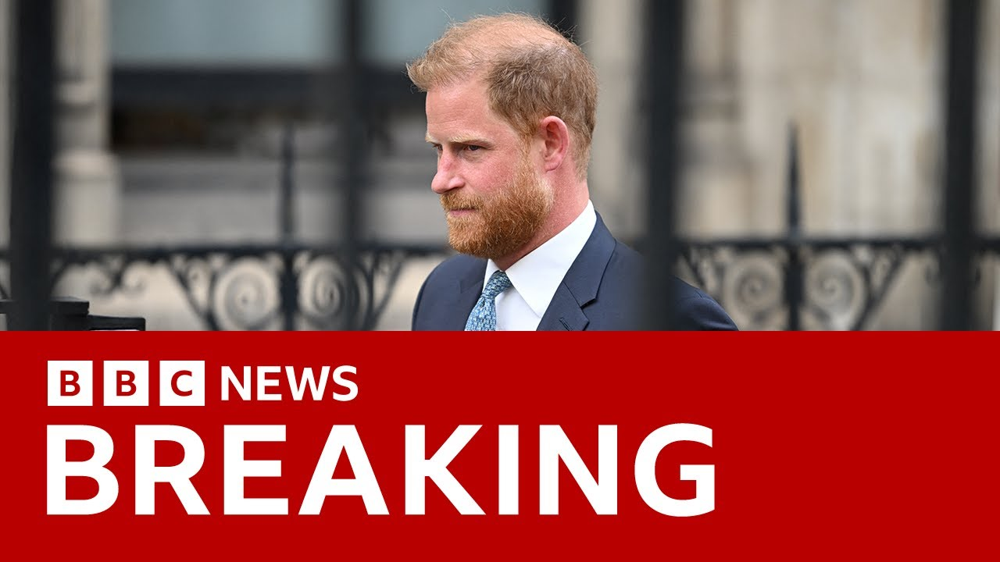

来B站一起耍【Global每日英语简报】
【哈里王子在英国安保级别法律诉讼中败诉 | BBC新闻】
Summary: Prince Harry lost his court appeal regarding UK security protection, with judges ruling the downgrade was justified after he stepped back from royal duties, making it unlikely he'll bring his family to the UK soon.
摘要： 哈里王子就英国安保级别提出的上诉被驳回，法官认为其安保降级合理，因他已退出王室职责，这意味着他短期内不太可能携家人返英。

⏱️ Estimated Reading Time: 4 min
Prince Harry, the Duke of Sussex, has lost the latest stage of his court battle over the level of security protection he receives in the UK.
苏塞克斯公爵哈里王子在英国安保级别法律诉讼的最新阶段败诉。
His taxpayer funded protection was downgraded 5 years ago.
五年前，他的纳税人资助的安保级别被降低。
The Duke says that as a result, it's too dangerous for him to bring his family to the UK, citing what he says is unjustified and inferior treatment.
公爵表示，这导致他携家人返英过于危险，并称此举是不公正且低劣的待遇。
The three judges at the Court of Appeal rejected that today.
上诉法院的三名法官今日驳回了这一主张。
They disagreed with his challenge.
他们不同意他的质疑。
The three judges there and they said that his appeal against the previous high court decision would be turned down.
三名法官表示，他对高等法院先前裁决的上诉将被驳回。
This is what Sir Jeffrey Voss had to say in court as he summed up the decision.
杰弗里·沃斯爵士在法庭总结裁决时如此陈述。
The decisions taken in the decision letter and subsequently were taken, I said in my judgment, as an understandable and perhaps predictable reaction to the Duke of Sussex having stepped back from royal duties and having left the UK to live principally overseas.
我在判决书中指出，决定信及后续措施是对苏塞克斯公爵退出王室职责并主要移居海外的合理且可预见的反应。
So the conclusion in my judgment with which my colleagues Lord justices Bean and Lord and Edis agreed was that the Duke of Sussex's appeal would be dismissed.
因此，我与同事比恩和埃迪斯勋爵一致裁定，驳回苏塞克斯公爵的上诉。
Jeffrey said the Duke of Sussex's arguments were powerful and moving and it was plain that he felt badly treated by the system.
杰弗里称，苏塞克斯公爵的论点有力且动人，显然他认为自己受到体制的不公对待。
But he could not say that Prince Harry's grievance translated into a legal argument for a challenge.
但他无法认定哈里王子的不满构成法律上的申诉依据。
This is going to be hugely disappointing for Prince Harry.
这对哈里王子将是巨大打击。
We know how serious he was about this particular court case.
我们深知他对此案的重视程度。
He came to the UK for the two-day hearing which took place last month.
他上月专程赴英参加为期两天的听证会。
This is going to be really disappointing for him.
这对他而言实属失望。
It's also going to have implications over whether he comes back to the UK with his family.
这也将影响他是否携家人返英的决定。
We have seen him make quick trips to the UK by himself.
我们曾见他独自快速往返英国。
But without his wife, Megan, the Duchess of Sussex, and without his children, Liizabeth and Archie.
但从未携妻子梅根（苏塞克斯公爵夫人）及子女莉莉贝特与阿奇同行。
He feels that it's not safe enough for them to travel with him.
他认为家人同行不够安全。
That means that he probably won't come back to the UK with his family for the foreseeable future.
这意味着短期内他很可能不会携家人返英。
He might decide to take this further.
他可能选择继续上诉。
He needs permission from the high court to do that.
这需获得高等法院许可。
He may decide to appeal and take it to the Supreme Court.
他或决定上诉至最高法院。
We haven't heard anything from him yet.
我们尚未收到他的声明。
But it's very early in Los Angeles at the moment.
因洛杉矶目前时间尚早。
This was a journey for him that was very very personal.
这对他而言是极其个人的抗争。
He hasn't been in the UK with his children since June 2022.
这关乎其子女无法了解自身血脉渊源。
They haven't spent time with King Charles III or with his brother.
自2022年6月后，他再未携子女赴英。
That's got to be weighing quite heavily on his mind.
孩子们未与查尔斯三世国王及其叔伯相处。
He does face different types of threats other members of the royal family perhaps don't.
这必定令他倍感压力。
He has served in Afghanistan and written about it.
他面临的威胁类型或与其他王室成员不同。
There's the racist element of the threats made against himself and his son Archie as well as Megan.
他曾服役阿富汗并著书提及。
People have been convicted and imprisoned for making those threats.
针对他本人、其子阿奇及梅根的威胁带有种族主义色彩。
Those perhaps are not being taken into account when his security is being judged.
已有人因相关威胁行为被判刑入狱。
The security he had before would be sufficient to counter those threats.
这些因素或许未在安保评估中被充分考虑。